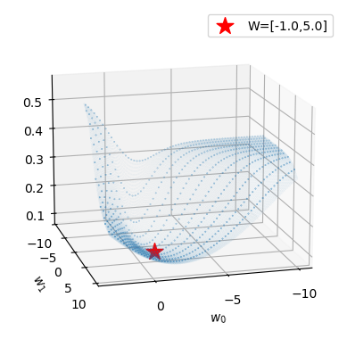

#{{<video https://youtu.be/playlist?list=PLQqh36zP38-xrw8e2pQ1KqKFb-i3lVtsI&si=dDAjAteouM7Y30HU >}}03wk-1: 로지스틱 – 로지스틱, BCELoss, Adam, 로지스틱의 한계

1. 강의영상
2. Imports
import torch
import matplotlib.pyplot as plt
import numpy as np
import pandas as pddef plot_loss(loss_fn, ax=None, Wstar=[-1,5]):
w0hat,w1hat =torch.meshgrid(torch.arange(-10,3,0.1),torch.arange(-1,10,0.1),indexing='ij')
w0hat = w0hat.reshape(-1)
w1hat = w1hat.reshape(-1)
def l(w0hat,w1hat):
yhat = torch.exp(w0hat+w1hat*x)/(1+torch.exp(w0hat+w1hat*x))
return loss_fn(yhat,y)
loss = list(map(l,w0hat,w1hat))
#---#
if ax is None:
fig = plt.figure()
ax = fig.add_subplot(1,1,1,projection='3d')
ax.scatter(w0hat,w1hat,loss,s=0.001)
ax.scatter(w0hat[::20],w1hat[::20],loss[::20],s=0.1,color='C0')
w0star,w1star = np.array(Wstar).reshape(-1)
ax.scatter(w0star,w1star,l(w0star,w1star),s=200,marker='*',color='red',label=f"W=[{w0star:.1f},{w1star:.1f}]")
#---#
ax.elev = 15
ax.dist = -20
ax.azim = 75
ax.legend()
ax.set_xlabel(r'$w_0$') # x축 레이블 설정
ax.set_ylabel(r'$w_1$') # y축 레이블 설정
ax.set_xticks([-10,-5,0]) # x축 틱 간격 설정
ax.set_yticks([-10,-5,0,5,10]) # y축 틱 간격 설정def learn_and_record(net, loss_fn, optimizr):
yhat_history = []
loss_history = []
What_history = []
Whatgrad_history = []
What_history.append([net[0].bias.data.item(), net[0].weight.data.item()])
for epoc in range(100):
## step1
yhat = net(x)
## step2
loss = loss_fn(yhat,y)
## step3
loss.backward()
## step4
optimizr.step()
## record
if epoc % 5 ==0:
yhat_history.append(yhat.reshape(-1).data.tolist())
loss_history.append(loss.item())
What_history.append([net[0].bias.data.item(), net[0].weight.data.item()])
Whatgrad_history.append([net[0].bias.grad.item(), net[0].weight.grad.item()])
optimizr.zero_grad()
return yhat_history, loss_history, What_history, Whatgrad_historydef show_animation(net, loss_fn, optimizr):
yhat_history,loss_history,What_history,Whatgrad_history = learn_and_record(net,loss_fn,optimizr)
fig = plt.figure(figsize=(7.5,3.5))
ax1 = fig.add_subplot(1, 2, 1)
ax2 = fig.add_subplot(1, 2, 2, projection='3d')
## ax1: 왼쪽그림
ax1.scatter(x,y,alpha=0.01)
ax1.scatter(x[0],y[0],color='C0',label=r"observed data = $(x_i,y_i)$")
ax1.plot(x,v,'--',label=r"prob (true) = $(x_i,\frac{exp(-1+5x_i)}{1+exp(-1+5x_i)})$")
line, = ax1.plot(x,yhat_history[0],'--',label=r"prob (estimated) = $(x_i,\hat{y}_i)$")
ax1.legend()
## ax2: 오른쪽그림
plot_loss(loss_fn,ax2)
ax2.scatter(np.array(What_history)[0,0],np.array(What_history)[0,1],loss_history[0],color='blue',s=200,marker='*')
def animate(epoc):
line.set_ydata(yhat_history[epoc])
w0hat = np.array(What_history)[epoc,0]
w1hat = np.array(What_history)[epoc,1]
w0hatgrad = np.array(Whatgrad_history)[epoc,0]
w1hatgrad = np.array(Whatgrad_history)[epoc,1]
ax2.scatter(w0hat,w1hat,loss_history[epoc],color='grey')
ax2.set_title(f"What.grad=[{w0hatgrad:.4f},{w1hatgrad:.4f}]",y=0.8)
fig.suptitle(f"epoch={epoc*5} // What=[{w0hat:.2f},{w1hat:.2f}] // Loss={loss_fn.__class__.__name__} // Opt={optimizr.__class__.__name__}")
return line
ani = animation.FuncAnimation(fig, animate, frames=20)
plt.close()
return anifrom matplotlib import animation
plt.rcParams["animation.html"] = "jshtml"3. ToyData1
x = torch.tensor([-6,-5,-4,-3,-2,-1, 0, 1, 2, 3, 4, 5, 6.0]).reshape(-1,1)
y = torch.tensor([ 0, 0, 0, 0, 0, 0, 1, 0, 1, 1, 1, 1, 1]).reshape(-1,1)
plt.plot(x,y,'o')
4. ToyData2
A. 로지스틱 모형
- \(x\)가 커질수록 \(y=1\)이 잘나오는 모형은 아래와 같이 설계할 수 있음 <— 외우세요!!!
\(y_i \sim {\cal B}(\pi_i),\quad\) where \(\pi_i = \frac{\exp(w_0+w_1x_i)}{1+\exp(w_0+w_1x_i)} = \frac{1}{1+\exp(-w_0-w_1x_i)}\)
\(\hat{y}_i= \frac{\exp(\hat{w}_0+\hat{w}_1x_i)}{1+\exp(\hat{w}_0+\hat{w}_1x_i)}=\frac{1}{1+\exp(-\hat{w}_0-\hat{w}_1x_i)}\)
\(loss= - \sum_{i=1}^{n} \big(y_i\log(\hat{y}_i)+(1-y_i)\log(1-\hat{y}_i)\big)\) <— 외우세요!!
- 회귀모형과 로지스틱 모형의 비교
회귀모형: \(y_i \sim {\cal N}(w_0+w_1x_i, \sigma^2)\)1
로지스틱: \(y_i \sim {\cal B}\big(\frac{\exp(w_0+w_1x_i)}{1+\exp(w_0+w_1x_i)}\big)\)
1 원래는 이렇게 썼었지.. \(y_i = w_0 + w_1x_i + \epsilon_i \quad \epsilon_i \sim {\cal N}(0,\sigma^2)\)
- 우리가 예측하고 싶은것
회귀모형: 정규분포의 평균을 예측하고 싶음. 즉 \(w_0+w_1x_i\)를 예측하고 싶음. 예측값으로는 \(\hat{w}_0 + \hat{w}_1x_i\)를 사용!
로지스틱: 베르누이의 평균을 예측하고 싶음. 즉 \(\frac{\exp(w_0+w_1x_i)}{1+\exp(w_0+w_1x_i)}\)를 예측하고 싶음. 예측값으로는 \(\frac{\exp(\hat{w}_0+\hat{w}_1x_i)}{1+\exp(\hat{w}_0+\hat{w}_1x_i)}\)를 사용!
B. 데이터
x = torch.linspace(-1,1,2000).reshape(2000,1)
w0 = -1
w1 = 5
u = w0 + x*w1 # 선형변환이네?
v = torch.exp(u) / (1+torch.exp(u))
y = torch.bernoulli(v)plt.plot(x,y,'.',alpha=0.03)
plt.plot(x[0],y[0],'o',label=r"$(x_i,y_i)$",color="C0")
plt.plot(x,v,'--r',label=r"prob (true, unknown) = $\frac{exp(-1+5x)}{1+exp(-1+5x)}$")
plt.legend()
우리의 목적: \(x_i\)가 들어가면 빨간곡선 \(\hat{y}_i\)의 값을 만들어주는 mapping을 학습해보자.
C. Step1: net 설계 (모델링)
- 최초의 곡선을 그려보자. (\(net: x \to yhat\) 을 수행하는 네트워크를 설계해보자는 의미)
# What = [-0.8,-0.3]# sigmoid 정의 # 최초의 직선 plot - w0hat + w1hat*x 이 부분을 torch.nn.Linear(bias = False)로 구현
- w0hat + w1hat*x 이 부분을 torch.nn.Linear(bias = True)로 구현
- 내가만든 sigmoid 대신에 토치에서 제공하는 sigmoid 사용
- 지금까지의 구현 확인
#- 관찰: 지금 아래의 구조이다.
\[{\boldsymbol x} \overset{l_1}{\to} {\boldsymbol u} \overset{a_1}{\to} {\boldsymbol v} = \hat{\boldsymbol y}\]
- 소망: 함수 \(l_1, a_1\) 의 합성을 하나로 묶어서
\[(a_1\circ l_1)({\boldsymbol x}) := net({\boldsymbol x})\]
이러한 기능을 하는 하나의 함수 \(net\)을 만들 수 없을까?
- net 살펴보기: 초보버전 – “파이토치 30일만에 완성하기” 이런책에 보면 내용이 나올지도?
- net 살펴보기: 고수버전 – 책 안보고 코딩배우기
D. Step 1~4
# 학습률 0.25
# What=[-0.8,-0.3]
# epoch=100# epoch 4900 추가 5. 학습과정 시각화 및 문제인식
A. 좋은 초기값
# What = [-0.8,0.3]
# MSELoss
# SGD, lr = 0.25
#---#
#show_animation(net,loss_fn,optimizr)B. 가능성 있는 초기값
# What = [-3,1]
# MSELoss
# SGD, lr = 0.25
#---#
#show_animation(net,loss_fn,optimizr)C. 최악의 초기값
# What = [-10,1]
# MSELoss
# SGD, lr = 0.25
#---#
#show_animation(net,loss_fn,optimizr)해결하는 접근법:
- 컴공스타일: 에폭을 늘려볼까?
- 산공스타일: 옵티마이저를 바꿔볼까?
- 통계스타일: Loss를 바꿔볼까?
6. 손실함수의 개선
A. BCE Loss를 사용하여 학습
- BCE loss라는게 있음.
# What = [-0.8,-0.3]
# BCELoss
# SGD, lr = 0.25
#---#
# step1~4- loss수식을 못외우겠다면?
# What = [-0.8,-0.3]
# BCELoss
# SGD, lr = 0.25
#---#
# step1~4B. Loss Function 시각화
plot_loss(torch.nn.MSELoss())
plot_loss(torch.nn.BCELoss())
- 비교해보자.
C. 학습과정 시각화 – 좋은 초기값
- MSELoss
# What = [-0.8,-0.3]
# MSELoss
# SGD, lr = 0.25
#---#
#show_animation(net,loss_fn,optimizr)- BCELoss
# What = [-0.8,-0.3]
# BCELoss
# SGD, lr = 0.25
#---#
#show_animation(net,loss_fn,optimizr)D. 학습과정 시각화 – 가능성 있는 초기값
- MSELoss
# What = [-3,1]
# MSELoss
# SGD, lr = 0.25
#---#
#show_animation(net,loss_fn,optimizr)- BCELoss
# What = [-3,1]
# BCELoss
# SGD, lr = 0.25
#---#
#show_animation(net,loss_fn,optimizr)E. 학습과정 시각화 – 최악의 초기값
- MSELoss
# What = [-10,1]
# MSELoss
# SGD, lr = 0.25
#---#
#show_animation(net,loss_fn,optimizr)- BCELoss
# What = [-10,1]
# BCELoss
# SGD, lr = 0.25
#---#
#show_animation(net,loss_fn,optimizr)7. 옵티마이저의 개선
C. 학습과정 시각화 – 좋은 초기값
- MSELoss + SGD
# What = [-0.8,0.3]
# MSELoss
# SGD, lr = 0.25
#---#
#show_animation(net,loss_fn,optimizr)- MSELoss + Adam
# What = [-0.8,0.3]
# MSELoss
# Adam, lr = 0.25
#---#
#show_animation(net,loss_fn,optimizr)D. 학습과정 시각화 – 가능성 있는 초기값
- MSELoss + SGD
# What = [-3,1]
# MSELoss
# SGD, lr = 0.25
#---#
#show_animation(net,loss_fn,optimizr)- MSELoss + Adam
# What = [-3,1]
# MSELoss
# Adam, lr = 0.25
#---#
#show_animation(net,loss_fn,optimizr)E. 학습과정 시각화 – 최악의 초기값
- MSELoss + SGD
# 생략- MSELoss + Adam
# What = [-10,1]
# MSELoss
# Adam, lr = 0.25
#---#
#show_animation(net,loss_fn,optimizr)8. 로지스틱의 한계
A. 신문기사 (데이터의 모티브)
중소·지방 기업 “뽑아봤자 그만두니까”
중소기업 관계자들은 고스펙 지원자를 꺼리는 이유로 높은 퇴직률을 꼽는다. 여건이 좋은 대기업으로 이직하거나 회사를 관두는 경우가 많다는 하소연이다. 고용정보원이 지난 3일 공개한 자료에 따르면 중소기업 청년취업자 가운데 49.5%가 2년 내에 회사를 그만두는 것으로 나타났다.
중소 IT업체 관계자는 “기업 입장에서 가장 뼈아픈 게 신입사원이 그만둬서 새로 뽑는 일”이라며 “명문대 나온 스펙 좋은 지원자를 뽑아놔도 1년을 채우지 않고 그만두는 사원이 대부분이라 우리도 눈을 낮춰 사람을 뽑는다”고 말했다.
B. 가짜데이터
df = pd.read_csv("https://raw.githubusercontent.com/guebin/DL2024/main/posts/dnnex.csv")
df| x | prob | y | |
|---|---|---|---|
| 0 | -1.000000 | 0.000045 | 0.0 |
| 1 | -0.998999 | 0.000046 | 0.0 |
| 2 | -0.997999 | 0.000047 | 0.0 |
| 3 | -0.996998 | 0.000047 | 0.0 |
| 4 | -0.995998 | 0.000048 | 0.0 |
| ... | ... | ... | ... |
| 1995 | 0.995998 | 0.505002 | 0.0 |
| 1996 | 0.996998 | 0.503752 | 0.0 |
| 1997 | 0.997999 | 0.502501 | 0.0 |
| 1998 | 0.998999 | 0.501251 | 1.0 |
| 1999 | 1.000000 | 0.500000 | 1.0 |
2000 rows × 3 columns
x = torch.tensor(df.x).float().reshape(-1,1)
y = torch.tensor(df.y).float().reshape(-1,1)
prob = torch.tensor(df.prob).float().reshape(-1,1)plt.plot(x,y,'o',alpha=0.02)
plt.plot(x[0],y[0],'o',label= r"observed data = $(x_i,y_i)$",color="C0")
plt.plot(x,prob,'--b',label= r"prob (true, unknown)")
plt.legend()
C. 로지스틱으로 적합
# step 1~4 - Epoch을 10억번으로 설정해도 이건 못 맞출것 같음.
- 결국 올라가다가 내려가는 언더라잉을 맞춰야 하는데 현재 모형으로는 이걸 표현할 수 없다.
- 모형의 표현력이 낮다.
D. 해결책 (아이디어 수준만)
- sigmoid를 넣기 전의 상태가 직선이 아니라 꺽이는 직선이야 한다.
a = torch.nn.Sigmoid()fig,ax = plt.subplots(4,2,figsize=(8,8))
u1 = torch.tensor([-6,-4,-2,0,2,4,6])
u2 = torch.tensor([6,4,2,0,-2,-4,-6])
u3 = torch.tensor([-6,-2,2,6,2,-2,-6])
u4 = torch.tensor([-6,-2,2,6,4,2,0])
ax[0,0].plot(u1,'--o',color='C0',label = r"$u_1$")
ax[0,0].legend()
ax[0,1].plot(a(u1),'--o',color='C0',label = r"$a(u_1)=\frac{exp(u_1)}{exp(u_1)+1}$")
ax[0,1].legend()
ax[1,0].plot(u2,'--o',color='C1',label = r"$u_2$")
ax[1,0].legend()
ax[1,1].plot(a(u2),'--o',color='C1',label = r"$a(u_2)=\frac{exp(u_2)}{exp(u_2)+1}$")
ax[1,1].legend()
ax[2,0].plot(u3,'--o',color='C2', label = r"$u_3$")
ax[2,0].legend()
ax[2,1].plot(a(u3),'--o',color='C2', label = r"$a(u_3)=\frac{exp(u_3)}{exp(u_3)+1}$")
ax[2,1].legend()
ax[3,0].plot(u4,'--o',color='C3', label = r"$u_4$")
ax[3,0].legend()
ax[3,1].plot(a(u4),'--o',color='C3', label = r"$a(u_4)=\frac{exp(u_4)}{exp(u_4)+1}$")
ax[3,1].legend()
9. HW
강의노트의 로직스틱 예제 ToyData2 에서 다양한 초기값에서 BCE loss 와 Adma을 이용하여 학습해보고 시각화해보라.